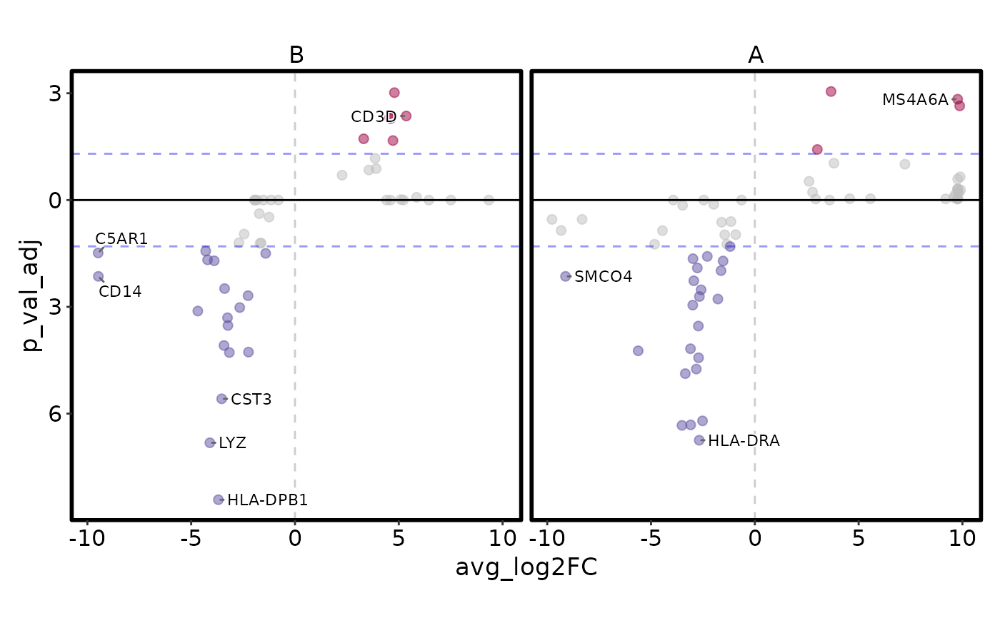

A volcano plot is a type of scatter plot that shows statistical significance (usually on the y-axis) versus magnitude of change (usually on the x-axis).
Usage
VolcanoPlot(
data,
x,
y,
ytrans = function(n) -log10(n),
color_by = NULL,
color_name = NULL,
flip_negatives = FALSE,
x_cutoff = NULL,
y_cutoff = 0.05,
split_by = NULL,
split_by_sep = "_",
x_cutoff_name = NULL,
y_cutoff_name = NULL,
x_cutoff_color = "red2",
y_cutoff_color = "blue2",
x_cutoff_linetype = "dashed",
y_cutoff_linetype = "dashed",
x_cutoff_linewidth = 0.5,
y_cutoff_linewidth = 0.5,
pt_size = 2,
pt_alpha = 0.5,
nlabel = 5,
labels = NULL,
label_size = 3,
label_fg = "black",
label_bg = "white",
label_bg_r = 0.1,
highlight = NULL,
highlight_color = "red",
highlight_size = 2,
highlight_alpha = 1,
highlight_stroke = 0.5,
facet_by = NULL,
facet_scales = "fixed",
facet_ncol = NULL,
facet_nrow = NULL,
facet_byrow = TRUE,
theme = "theme_this",
theme_args = list(),
palette = "Spectral",
palcolor = NULL,
title = NULL,
subtitle = NULL,
xlab = NULL,
ylab = NULL,
aspect.ratio = 1,
legend.position = "right",
legend.direction = "vertical",
seed = 8525,
combine = TRUE,
nrow = NULL,
ncol = NULL,
byrow = TRUE,
...
)Arguments
- data
A data frame.
- x
A character string specifying the column name of the data frame to plot for the x-axis.
- y
A character string specifying the column name of the data frame to plot for the y-axis.
- ytrans
A function to transform the y-axis values.
- color_by
A character vector of column names to color the points by. If NULL, the points will be filled by the x and y cutoff value.
- color_name
A character string to name the legend of color.
- flip_negatives
A logical value to flip the y-axis for negative x values.
- x_cutoff
A numeric value to set the x-axis cutoff. Both negative and positive of this value will be used.
- y_cutoff
A numeric value to set the y-axis cutoff. Note that the y-axis cutoff will be transformed by
ytrans. So you should provide the original value.- split_by
The column(s) to split data by and plot separately.
- split_by_sep
The separator for multiple split_by columns. See
split_by- x_cutoff_name
A character string to name the x-axis cutoff. If "none", the legend for the x-axis cutoff will not be shown.
- y_cutoff_name
A character string to name the y-axis cutoff. If "none", the legend for the y-axis cutoff will not be shown.
- x_cutoff_color
A character string to color the x-axis cutoff line.
- y_cutoff_color
A character string to color the y-axis cutoff line.
- x_cutoff_linetype
A character string to set the x-axis cutoff line type.
- y_cutoff_linetype
A character string to set the y-axis cutoff line type.
- x_cutoff_linewidth
A numeric value to set the x-axis cutoff line size.
- y_cutoff_linewidth
A numeric value to set the y-axis cutoff line size.
- pt_size
A numeric value to set the point size.
- pt_alpha
A numeric value to set the point transparency.
- nlabel
A numeric value to set the number of labels to show. The points will be ordered by the distance to the origin. Top
nlabelpoints will be labeled.- labels
A character vector of row names or indexes to label the points.
- label_size
A numeric value to set the label size.
- label_fg
A character string to set the label color.
- label_bg
A character string to set the label background color.
- label_bg_r
A numeric value specifying the radius of the background of the label.
- highlight
A character vector of row names or indexes to highlight the points.
- highlight_color
A character string to set the highlight color.
- highlight_size
A numeric value to set the highlight size.
- highlight_alpha
A numeric value to set the highlight transparency.
- highlight_stroke
A numeric value to set the highlight stroke size.
- facet_by
A character string specifying the column name of the data frame to facet the plot. Otherwise, the data will be split by
split_byand generate multiple plots and combine them into one usingpatchwork::wrap_plots- facet_scales
Whether to scale the axes of facets. Default is "fixed" Other options are "free", "free_x", "free_y". See
ggplot2::facet_wrap- facet_ncol
A numeric value specifying the number of columns in the facet. When facet_by is a single column and facet_wrap is used.
- facet_nrow
A numeric value specifying the number of rows in the facet. When facet_by is a single column and facet_wrap is used.
- facet_byrow
A logical value indicating whether to fill the plots by row. Default is TRUE.
- theme
A character string or a theme class (i.e. ggplot2::theme_classic) specifying the theme to use. Default is "theme_this".
- theme_args
A list of arguments to pass to the theme function.
- palette
A character string specifying the palette to use. A named list or vector can be used to specify the palettes for different
split_byvalues.- palcolor
A character string specifying the color to use in the palette. A named list can be used to specify the colors for different
split_byvalues. If some values are missing, the values from the palette will be used (palcolor will be NULL for those values).- title
A character string specifying the title of the plot. A function can be used to generate the title based on the default title. This is useful when split_by is used and the title needs to be dynamic.
- subtitle
A character string specifying the subtitle of the plot.
- xlab
A character string specifying the x-axis label.
- ylab
A character string specifying the y-axis label.
- aspect.ratio
A numeric value specifying the aspect ratio of the plot.
- legend.position
A character string specifying the position of the legend. if
waiver(), for single groups, the legend will be "none", otherwise "right".- legend.direction
A character string specifying the direction of the legend.
- seed
The random seed to use. Default is 8525.
- combine
Whether to combine the plots into one when facet is FALSE. Default is TRUE.
- nrow
A numeric value specifying the number of rows in the facet.
- ncol
A numeric value specifying the number of columns in the facet.
- byrow
A logical value indicating whether to fill the plots by row.
- ...
Additional arguments.
Examples
# \donttest{
set.seed(8525)
# Obtained by Seurat::FindMakers for the first cluster of pbmc_small
data <- data.frame(
avg_log2FC = c(
-3.69, -4.10, -2.68, -3.51, -3.09, -2.52, -3.53, -3.35, -2.82, -2.71, -3.16, -2.24,
-5.62, -3.10, -3.42, -2.72, -3.23, -3.25, -4.68, 3.67, -2.66, 4.79, -2.99, 10.14,
-1.78, -2.67, -2.26, -2.59, -3.39, 5.36, 4.56, 4.62, -2.94, -9.47, -9.12, -1.63,
-2.77, 3.31, -1.53, -3.89, -4.21, 4.72, -2.98, -2.29, -1.41, -9.48, -4.30, 3.01,
-1.19, -4.83, -1.35, -1.68, -1.63, -2.70, 3.86, 3.81, 7.23, -1.45, -0.92, -2.45,
3.91, -4.45, -9.33, 3.56, 2.27, -1.60, -1.15, 11.40, -9.77, -8.32, 2.61, -1.25,
-1.72, 10.61, 11.34, 10.02, 2.78, -3.48, -1.98, 5.86, 5.57, 4.57, 9.75, 9.97,
10.90, 9.19, 2.93, 5.10, -1.52, -3.93, -1.95, -2.46, -0.64, 4.60, -1.82, -0.80,
9.34, 7.51, 6.45, 5.23, 4.41, 3.60, -1.94, -1.15),
p_val_adj = c(
3.82e-09, 1.52e-07, 1.79e-07, 4.68e-07, 4.83e-07, 6.26e-07, 2.61e-06, 1.33e-05,
1.79e-05, 3.71e-05, 5.21e-05, 5.36e-05, 5.83e-05, 6.66e-05, 8.22e-05, 2.89e-04,
3.00e-04, 4.94e-04, 7.62e-04, 8.93e-04, 9.55e-04, 9.61e-04, 1.12e-03, 1.47e-03,
1.66e-03, 1.95e-03, 2.06e-03, 3.01e-03, 3.26e-03, 4.35e-03, 4.85e-03, 5.12e-03,
5.40e-03, 7.18e-03, 7.18e-03, 1.04e-02, 1.24e-02, 1.90e-02, 1.94e-02, 1.97e-02,
2.09e-02, 2.13e-02, 2.25e-02, 2.61e-02, 3.18e-02, 3.27e-02, 3.69e-02, 3.80e-02,
4.95e-02, 5.73e-02, 5.77e-02, 6.10e-02, 6.22e-02, 6.31e-02, 6.72e-02, 9.23e-02,
9.85e-02, 1.06e-01, 1.07e-01, 1.11e-01, 1.31e-01, 1.38e-01, 1.40e-01, 1.43e-01,
2.00e-01, 2.39e-01, 2.49e-01, 2.57e-01, 2.86e-01, 2.86e-01, 2.98e-01, 3.32e-01,
4.15e-01, 4.91e-01, 4.91e-01, 4.91e-01, 5.97e-01, 7.11e-01, 7.59e-01, 8.38e-01,
9.20e-01, 9.20e-01, 9.29e-01, 9.29e-01, 9.29e-01, 9.29e-01, 9.34e-01, 9.68e-01,
1.00e+00, 1.00e+00, 1.00e+00, 1.00e+00, 1.00e+00, 1.00e+00, 1.00e+00, 1.00e+00,
1.00e+00, 1.00e+00, 1.00e+00, 1.00e+00, 1.00e+00, 1.00e+00, 1.00e+00, 1.00e+00),
gene = c(
"HLA-DPB1", "LYZ", "HLA-DRA", "TYMP", "HLA-DPA1", "HLA-DRB1", "CST3", "HLA-DQB1",
"HLA-DRB5", "LST1", "HLA-DQA1", "AIF1", "S100A8", "IFITM3", "HLA-DMB", "FCGRT",
"SERPINA1", "IFI30", "S100A9", "CCL5", "GRN", "LCK", "HLA-DMA", "MS4A6A", "CTSS",
"CFP", "FCN1", "BID", "CFD", "CD3D", "CD7", "CD3E", "LGALS2", "CD14", "SMCO4",
"LINC00936", "HCK", "CTSW", "LGALS1", "HLA-DQA2", "LRRC25", "GZMM", "RNF130",
"LGALS3", "S100A11", "C5AR1", "IL1B", "GZMA", "FCER1G", "MPEG1", "TYROBP", "TSPO",
"GSTP1", "CTSB", "IL32", "CD247", "GNLY", "COTL1", "NFKBIA", "NUP214", "LAMP1",
"FPR1", "CLEC10A", "CST7", "PRF1", "BLVRA", "PSAP", "GZMH", "EAF2", "ASGR1",
"RARRES3", "SAT1", "LY86", "GP9", "TUBB1", "NGFRAP1", "XBP1", "SCO2", "RGS2", "GZMB",
"HIST1H2AC", "KLRD1", "PGRMC1", "AKR1C3", "PTGDR", "IL2RB", "GYPC", "CCL4", "CD68",
"FCER1A", "CD79B", "MS4A7", "CARD16", "ACAP1", "CD79A", "ANXA2", "TMEM40", "PF4",
"GNG11", "CLU", "CD9", "FGFBP2", "TNFRSF1B", "IFI6"),
pct_diff = c(
-0.752, -0.457, -0.460, -0.671, -0.626, -0.701, -0.502, -0.619, -0.623, -0.598,
-0.566, -0.626, -0.543, -0.566, -0.541, -0.542, -0.515, -0.489, -0.444, 0.428,
-0.517, 0.461, -0.491, -0.410, -0.480, -0.491, -0.521, -0.491, -0.438, 0.411,
0.411, 0.409, -0.438, -0.359, -0.359, -0.440, -0.386, 0.385, -0.332, -0.361, -0.361,
0.364, -0.387, -0.415, -0.454, -0.308, -0.335, 0.364, -0.454, -0.309, -0.379, -0.427,
-0.377, -0.389, 0.335, 0.315, 0.313, -0.284, -0.502, -0.309, 0.313, -0.284, -0.256,
0.309, 0.313, -0.364, -0.406, 0.244, -0.231, -0.231, 0.281, -0.311, -0.312, 0.220,
0.220, 0.220, 0.261, -0.232, -0.367, 0.240, 0.218, 0.218, 0.195, 0.195, 0.195, 0.195,
0.262, 0.218, -0.288, -0.207, -0.290, -0.233, -0.367, 0.217, -0.233, -0.403, 0.171,
0.194, 0.194, 0.194, 0.194, 0.213, -0.235, -0.292),
group = sample(LETTERS[1:2], 104, replace = TRUE)
)
rownames(data) <- data$gene
VolcanoPlot(data, x = "avg_log2FC", y = "p_val_adj", color_by = "pct_diff",
y_cutoff_name = "-log10(0.05)")
VolcanoPlot(data, x = "avg_log2FC", y = "p_val_adj", y_cutoff_name = "none",
flip_negatives = TRUE)
VolcanoPlot(data, x = "avg_log2FC", y = "p_val_adj", y_cutoff_name = "none",
flip_negatives = TRUE, facet_by = "group")
VolcanoPlot(data, x = "avg_log2FC", y = "p_val_adj", y_cutoff_name = "none",
flip_negatives = TRUE, split_by = "group")

VolcanoPlot(data, x = "avg_log2FC", y = "p_val_adj", y_cutoff_name = "none",
highlight = c("ANXA2", "TMEM40", "PF4", "GNG11", "CLU", "CD9", "FGFBP2",
"TNFRSF1B", "IFI6"))
VolcanoPlot(data, x = "avg_log2FC", y = "p_val_adj", color_by = "pct_diff",
y_cutoff_name = "-log10(0.05)", split_by = "group",
palette = c(A = "Set1", B = "Dark2"))
# }